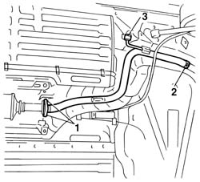
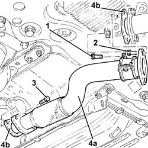
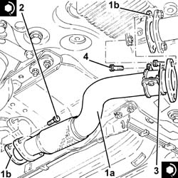
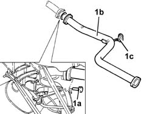
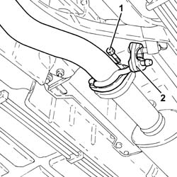
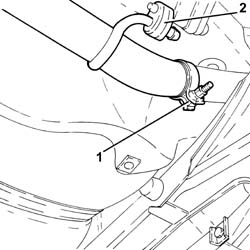
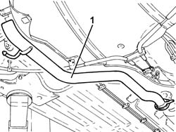
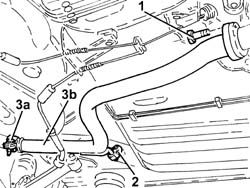

1076B18 rigid section of exhaust pipe between catalytic converter and silencer - r + r
- Path
- Procedures > 10 ENGINE > 1076 EXHAUST PIPES AND SILENCERS > 1076B exhaust pipes and silencers > 1076B18 rigid section of exhaust pipe between catalytic converter and silencer - r + r
- Kind
- repair procedure (removal / refitting; the operation number is the code)
- Applies to
- engines: 1.6 TS , 1.8 TS, 2.0 JTS, 1.9 JTD 8v , 1.9 JTD 16v, 2.0 JTS, 2.4 JTD 10v, 2.4 JTD 20v; all production periods
- Interactive page
- https://sloeber94.github.io/elrnDB-a156/en/#/3237704
Applies to: engines: 1.6 TS , 1.8 TS; all production periods
 Removing
Removing
 Refitting
RefittingPlace the car on the lifting bridge and lift it.
1. Unscrew the two fixing screws to catalytic converter.
Remove oil seal.
2. Slacken fixing clamp of rear exhaust terminal.
3. Release pipe from retaining ring, extract and remove it.

Applies to: engines: 1.6 TS , 1.8 TS; all production periods
Refitting
RemovingHook pipe to retaining ring.
Insert pipe end into exhaust terminal seating.
Tighten fixing clamp of exhaust terminal.
Place seal ring between the two flanges and fix pipe to catalytic coverter with the two screws.
 | Fastening | Component | Ø | Value (daNm) |
|---|---|---|---|---|
- | Bolt | EXHAUST PIPE ASSEMBLY | M8 | 2.28 - 2.76 |
Applies to: engines: 2.0 JTS, 2.0 JTS; all production periods
Removing
RefittingPosition the vehicle on the ramp.
Proceed with removal 7055B54 under-engine guard - r r .
1. Undo the bolt securing the collar supporting the rigid exhaust pipe section between converter and silencer to the relevant bracket.
2. Undo the bolts securing the rigid exhaust pipe section between converter and silencer to the catalytic converter.
3. Undo the bolts securing the rigid exhaust pipe section between converter and silencer to the front silencer.
4. Remove the rigid exhaust pipe section between converter and silencer (4a) and the relevant gaskets (4b).

Applies to: engines: 2.0 JTS, 2.0 JTS; all production periods
Refitting
Removing1. Refit in its seating the rigid exhaust pipe section between converter and silencer (1a) complete with gaskets (1b).
2. Tighten the bolts securing the rigid exhaust pipe section between converter and silencer to the front silencer to the recommended torque.
| Fastening | Component | Ø | Value (daNm) |
|---|---|---|---|---|
2 | Bolt | RIGID EXHAUST PIPE | M10 | (Front silencer side) 5.9 ÷ 7.2 |
3. Tighten the bolts securing the rigid exhaust pipe section between converter and silencer to the catalytic converter to the specified torque.
| Fastening | Component | Ø | Value (daNm) |
|---|---|---|---|---|
3 | Bolt | RIGID EXHAUST PIPE | M8 | (Catalytic converter side) 2.3 ÷ 2.8 |
4. Tighten the bolt securing the collar supporting the rigid exhaust pipe section between converter and silencer to the relevant bracket.

Applies to: engines: 2.0 JTS, 2.0 JTS; all production periods
Proceed with refitting 7055B54 under-engine guard - r r .
Remove the car from the ramps.
Applies to: engines: 1.9 JTD 8v , 2.4 JTD 10v; all production periods
Removing
Refitting1076B50 exhaust pipe attachment to engine - r + r
1080B62 catalytic converter - r + r
1. Undo bolts (1a) and remove the rigid exhaust pipe (1b) after releasing it from flexible mount (1c).
2. Remove the seal.

Applies to: engines: 1.9 JTD 8v , 2.4 JTD 10v; all production periods
Refitting
RemovingFit the rigid exhaust pipe together with the sealing ring and support using the flexible mount.
Use a torque wrench to tighten the rigid exhaust pipe end rear silencer bolts .
| Fastening | Component | Ø | Value (daNm) |
|---|---|---|---|---|
- | Bolt | REAR EXHAUST SILENCER | M8 | 2.0 - 2.5 |
Applies to: engines: 1.9 JTD 16v; all production periods
Removing
RefittingPosition the vehicle on the ramp.
1. Undo the bolts securing the rigid exhaust pipe section between the catalytic converter and silencer, catalytic converter side.
2. Release the rigid pipe for the exhaust pipe between the catalytic converter and the silencer from the front flexible mounting.

Applies to: engines: 1.9 JTD 16v; all production periods
1. Loosen the collar fastening the rigid exhaust pipe section between the catalytic converter and silencer, rear silencer side.
2. Release the rigid pipe for the exhaust pipe between the catalytic converter and the silencer from the rear flexible mounting.

Applies to: engines: 1.9 JTD 16v; all production periods
1. Remove the rigid exhaust pipe section between catalytic converter and silencer, releasing it from the rear exhaust silencer.

Applies to: engines: 1.9 JTD 16v; all production periods
Refitting
RemovingRefit the rigid exhaust pipe section between the catalytic converter and the silencer and connect it to the rear exhaust silencer.
Connect the rigid exhaust pipe section between the catalytic converter and the silencer to the flexible mountings.
Tighten the collar fastening the rigid section of the exhaust pipe between the catalytic converter and the silencer, rear silencer side.
Tighten the bolts securing the rigid exhaust pipe section between catalytic converter and silencer, catalytic converter side to the specified torque.
| Fastening | Component | Ø | Value (daNm) |
|---|---|---|---|---|
- | Bolt | CATALYTIC CONVERTER (ONE) | M8 | (Rigid pipe side) 2.3 ÷ 2.8 |
Remove the car from the ramps.
Applies to: engines: 2.4 JTD 20v; all production periods
Removing
RefittingPosition the vehicle on the ramp.
1. Undo the bolts securing the rigid exhaust pipe section between the catalytic converter and silencer, catalytic converter side.
2. Release the rigid pipe for the exhaust pipe between the catalytic converter and the silencer from the flexible mounting.
3. Loosen the collar (3a) and remove the rigid pipe for the exhaust pipe between the catalytic converter and the silencer (3b), releasing it from the rear exhaust silencer.

Applies to: engines: 2.4 JTD 20v; all production periods
Refitting
RemovingRefit the rigid exhaust pipe section between the catalytic converter and the silencer and connect it to the rear exhaust silencer.
Connect the rigid exhaust pipe section between the catalytic converter and the silencer to the flexible mounting.
Tighten the collar fastening the rigid section of the exhaust pipe between the catalytic converter and the silencer, rear silencer side.
Tighten the bolts securing the rigid exhaust pipe section between catalytic converter and silencer, catalytic converter side, to the specified torque.
| Fastening | Component | Ø | Value (daNm) |
|---|---|---|---|---|
- | Bolt | CATALYTIC CONVERTER (ONE) | M8 | (Rigid pipe side) 2.3 ÷ 2.8 |
Remove the car from the ramps.
Topics linked from this page (3)
- 1076B50 exhaust pipe attachment to engine - r + r
- 1080B62 catalytic converter - r + r
- 7055B54 under-engine guard - r r
Topics that link to this page (25)
- 0510C20 lubrication system - check delivery pressure
- 1004B10 power unit with manual gearbox - r + r
- 1004B24 power unit with manual gearbox with hydraulic selection - r r
- 1008B20 power unit intermediate mount flexible block - replace
- 1056F60 SINGLE FUEL MANIFOLD PIPE, complete with injectors - R.R.
- 1056F95 INJECTOR CABLE LOOM - R.R.
- 1072B10 inlet manifold - r + r and replace seal
- 1072D10 modular inlet manifold - r+r
- 1076A32 exhaust rigid mount - r r
- 1076B12 exhaust pipe assembly r+r emission control versions
- 1080E28 enablement solenoid for flow of fuel vapour to inlet - r+r
- 1080E63 Fuel vapour PIPE from INTERMEDIATE COUPLING to fuel vapour SOLENOID VALVE - R.R.
- 1084A42 engine oil pressure warning light switch - r + r
- 2125C70 gearbox/brake lever mount - r r
- 2127A70 support for control levers for manual gearbox with hydraulic selection and handbrake - r r
- 2710A30 intermediate drive shaft - r + r with r/h drive shaft removed
- 2710A31 intermediate drive shaft - r r
- 3330B69 rhp brake connection pipe - r r
- 3340B67 rh brake connection pipe - r r
- 4130B54 return pipe from heat exchanger pipe to power steering fluid resevior r r
- 4130B74 return pipe between power steering case and duplex pipes r r
- 5510C34 rpm and timing sensor (single) - r+r
- 5510C42 knock sensor - r+r
- 5520B10 starter motor - r+r
- 5530A10 alternator - r+r